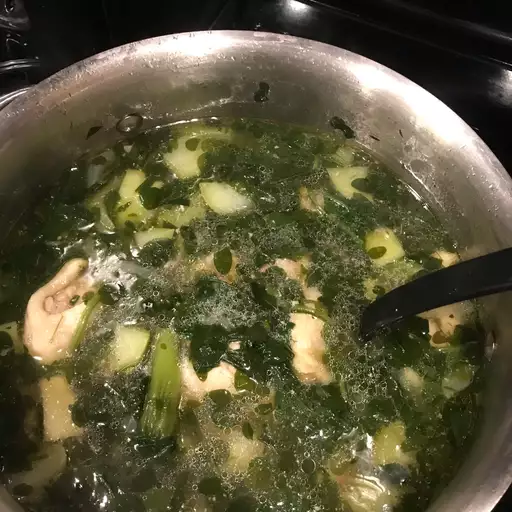

Chicken Tinola Recipe
Home

Description:
Chicken tinola is a soothing,
ginger-infused Filipino soup designed to comfort the soul and warm the body.
Ingredients:
- Chicken: 1 kg chicken pieces (cut into serving sizes)
- Ginger: a 2-inch thumb of ginger, sliced into strips
- Green Papaya: 1 small green papaya (or chayote / sayote), wedged
- Chili Leaves: 1 cup fresh chili leaves (or malunggay / moringa leaves)
- Garlic: 4 cloves, minced
- Onion: 1 medium yellow onion, sliced
- Fish Sauce: 2 tablespoons (patis)
- Water: 5 to 6 cups rice washing (or regular water/chicken broth)
- Cooking Oil: 1 tablespoon (for sautéing the aromatics)
Steps:
- Sauté the aromatics: Heat cooking oil in a large pot over medium heat. Sauté the ginger strips, garlic, and onions until they become highly fragrant and the onions turn translucent.
- Brown the chicken: Add the chicken pieces to the pot. Stir-fry for 3 to 5 minutes until the outer layer of the chicken turns light brown and releases its natural juices.
- Season and simmer: Pour in the fish sauce (patis) and stir well to coat the chicken. Pour in the water or rice washing, bring it to a boil, then lower the heat. Cover and simmer for 25 to 30 minutes until the chicken is tender, occasionally skimming off any foam on the surface.
- Cook the papaya: Add the green papaya or chayote wedges into the pot. Cover and simmer for another 5 to 8 minutes, or until the vegetables are fork-tender but not mushy.
- Wilt the greens: Turn off the heat. Throw in the fresh chili leaves or malunggay leaves. Put the lid back on and let the residual heat wilt the greens for 2 minutes before serving hot.